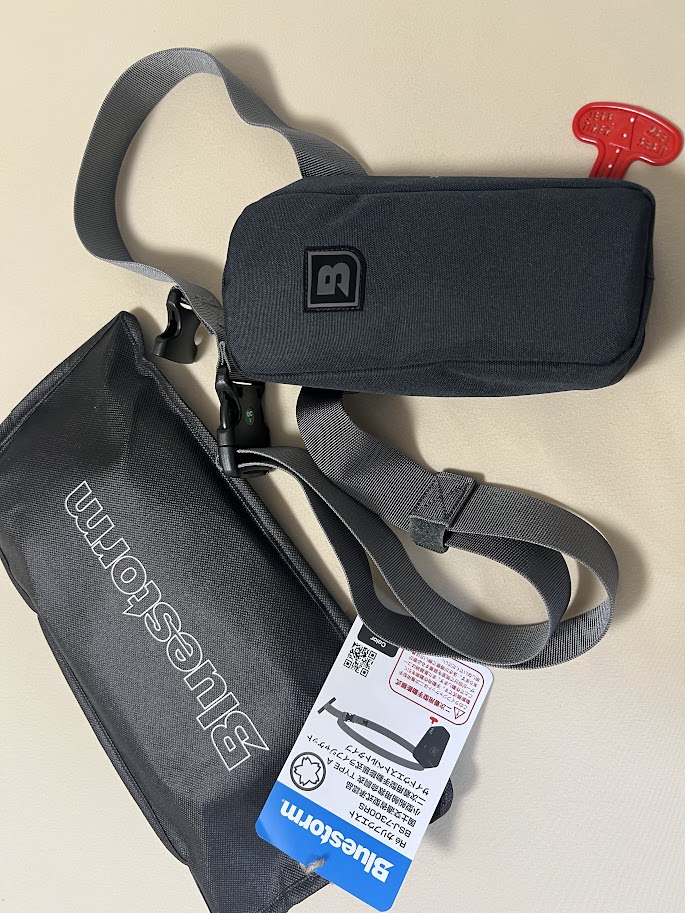
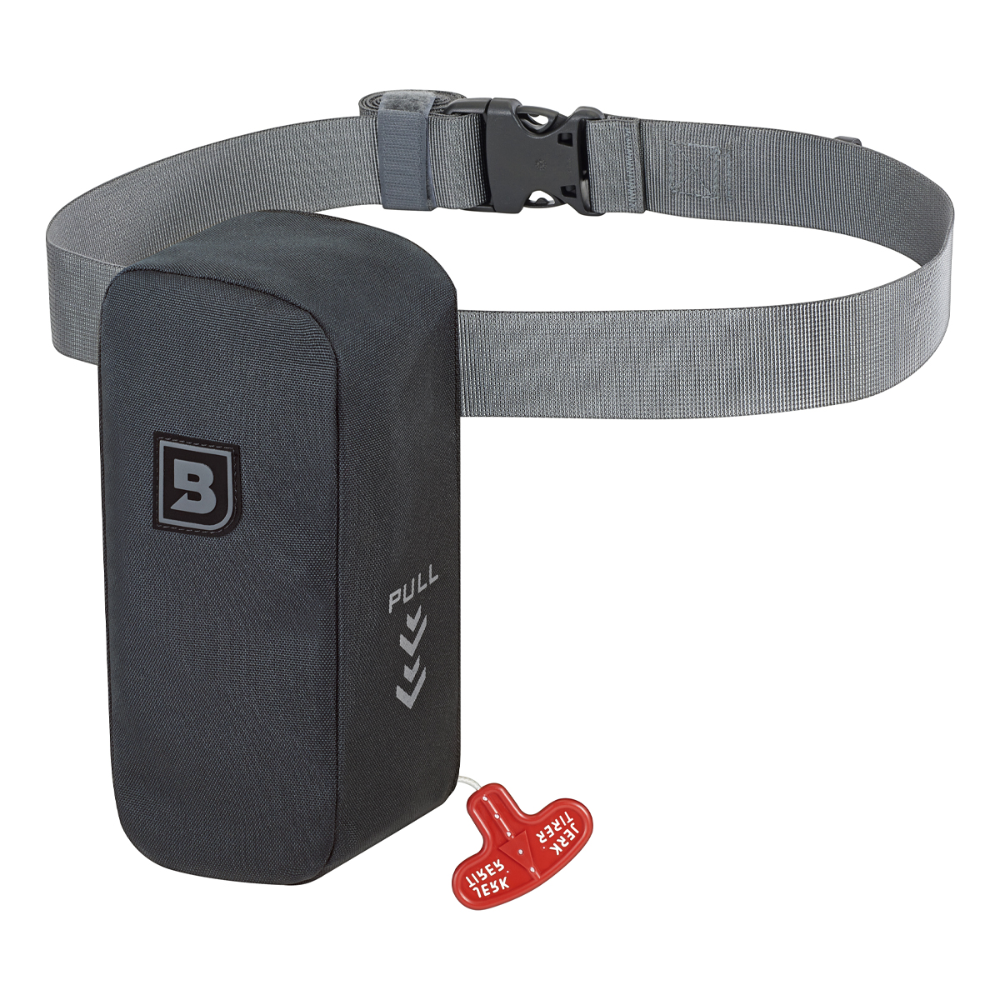
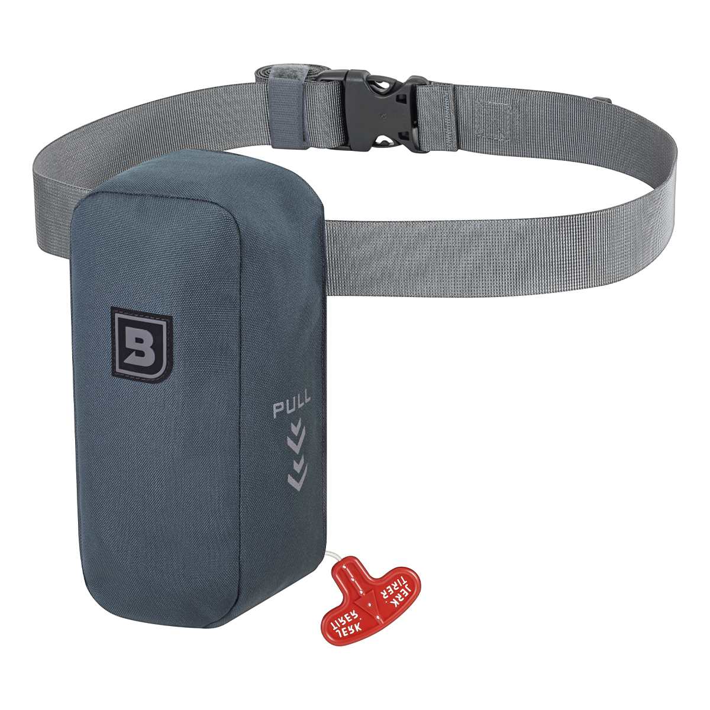
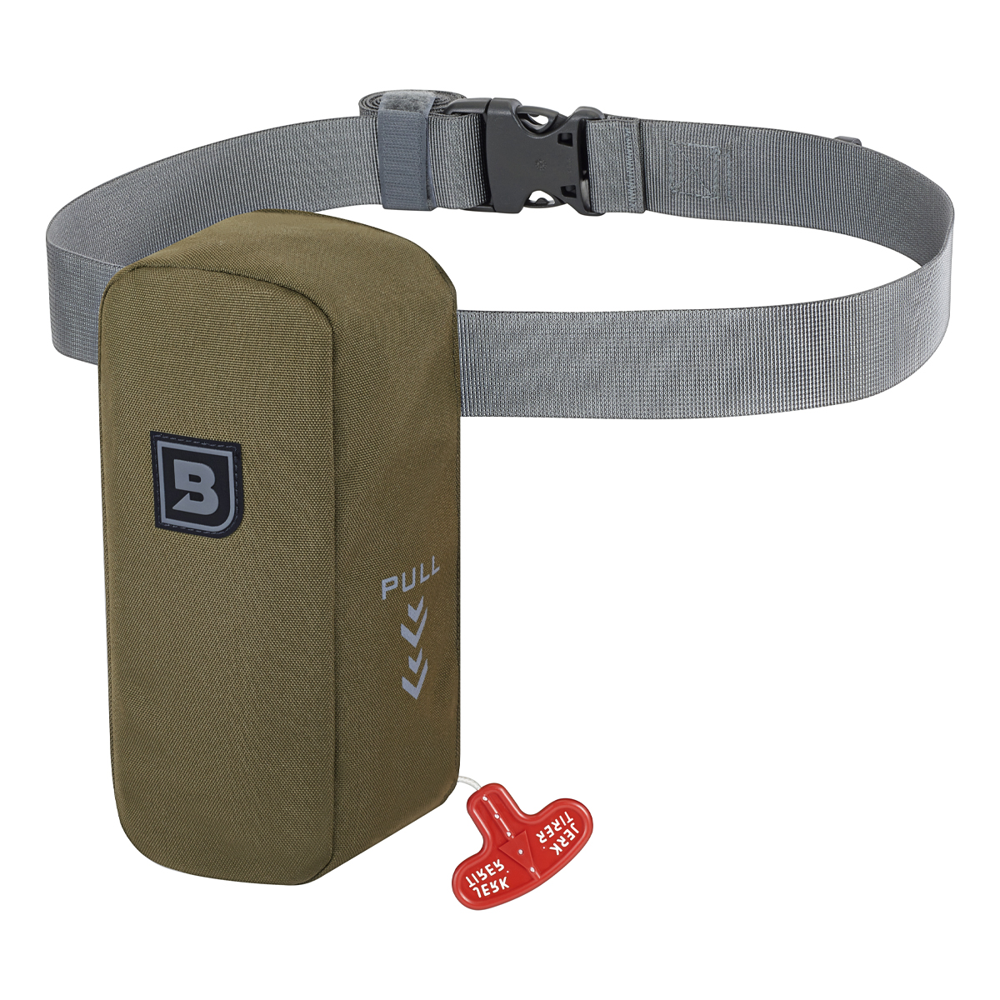
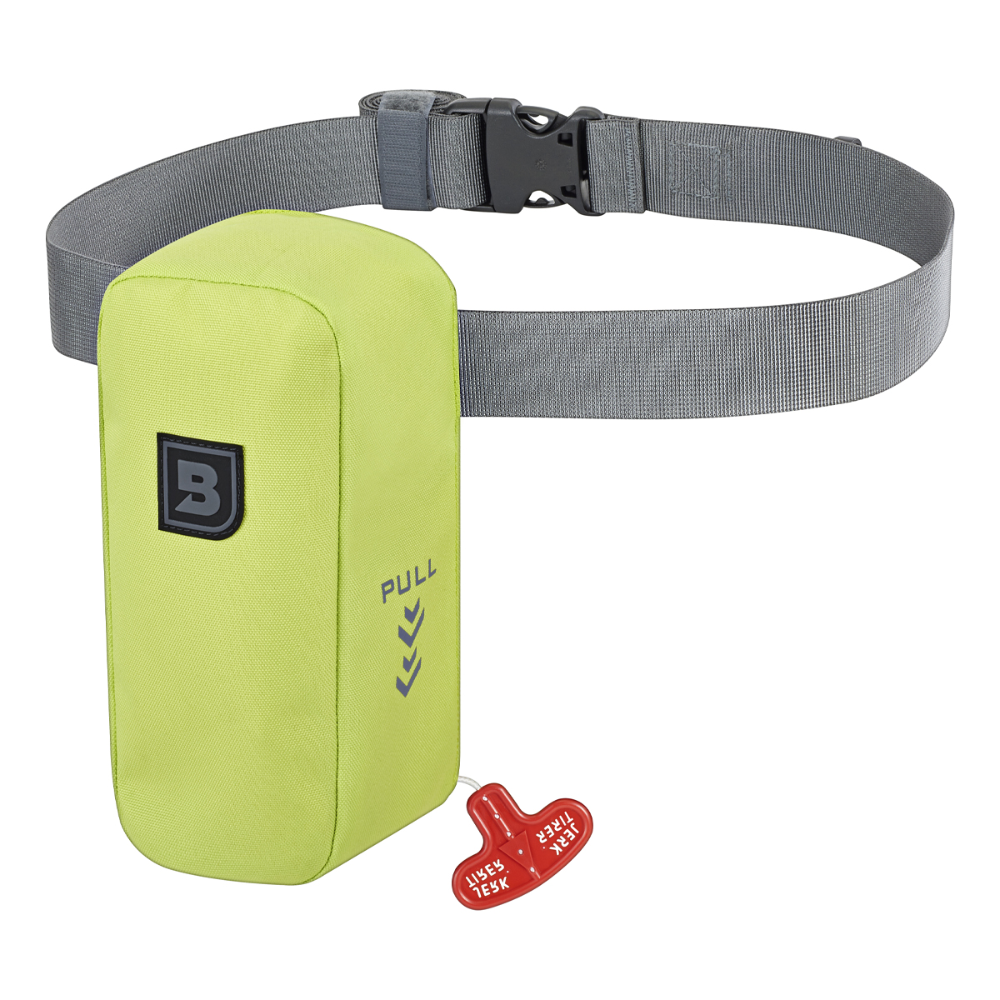

ブルーストーム Reカリフウエスト（BSJ-7300RS）
Reカリフウエスト（BSJ-7300RS）は高階救命器具のフィッシングブランドBluestorm（ブルーストーム）の腰巻きタイプ・膨張式ライフジャケットです。
「バス・ソルト問わずオカッパリ用ライフジャケット」をコンセプトに、コンパクトさをとことん追求した2025年の新モデル。ブルーストームのライフジャケットの中でも最小・最軽量クラスながら、桜マークTypeAを取得しておりボートでも使用できる万能な1台です。

スペック
- メーカー
- Bluestorm（ブルーストーム）/ 高階救命器具
- 型番
- BSJ-7300RS
- タイプ
- 腰巻き（サイドウエストベルト）／手動膨張式・二次着用型
- 認証
- 国土交通省型式承認 TypeA・桜マーク付き
- サイズ
- 胴囲 70〜140cm
- 重量
- 約409g
- 初期浮力
- 約9.8kg
- 生地
- DJ-600 リサイクルポリエステル600D・38mmナイロンベルト
- 充気装置
- 16HR（交換用ボンベキット対応）
- 価格
- 9,000〜10,560円前後
- 発売
- 2025年
▼今すぐチェック
ここに商品リンクやカエレバを手動で追加してください。
Reカリフウエストの特徴
「見ればわかるコンパクトさ」——ブルーストーム最小・最軽量の腰巻きライフジャケット
-
従来の腰巻きの約半分サイズを実現する特許レールシステム
気室の折りたたみ構造を工夫した特許取得のレールシステムにより、従来の腰巻きタイプの約半分のサイズにコンパクト化。ウエストの細い方や女性にもフィットし、装着している存在感がほとんどないほど軽快。
-
あえての「手動式」でボビン交換の有効期限なし
水を感知して自動で膨らむ自動式に対し、Reカリフウエストは作動索を引いた時だけ膨らむ手動式。自動式のように水分センサー（ボビン）の定期交換が不要で、ランニングコストと維持の手間を抑えられる。おかっぱり用途と割り切った合理的な設計。
-
環境配慮のReシリーズ・拡張性のある背面設計
外装に廃PETボトル由来のリサイクルポリエステル原糸「regen」を採用したサステナブルモデル。背面にはアクセサリーを追加でき、専用ショルダーバッグとの併用も可能。張りのある38mmナイロンベルトでホールド感も高い。
おかっぱりランガンで活きる理由
Reカリフウエスト最大の魅力はコンパクトさが生む「機動力」。コンパクトであるがゆえにショルダーバッグやメッセンジャーバッグと干渉せず、複数のギアを身につけるランガンスタイルでも動きを妨げない。さらに車のシートにも干渉しないため、着けたまま車に乗り込んで次のポイントへ移動できる——ランガンで何度もポイントを変える釣りにおいて、この「着けっぱなしで移動できる」快適さは想像以上に効いてくる。胴囲70〜140cmと幅広く、大柄な体格の方にも対応する。
購入前に知っておきたい注意点
TypeA取得で全航行区域の法定備品として使用できますが、船での使用には適切な判断が必要です。自動式が向く人・手動式が向く人を理解した上で、自分の釣りスタイルに合ったタイプを選びましょう。おかっぱり中心で軽さ・コンパクトさ・維持費を重視するならReカリフウエストは非常に理にかなった選択です。
カラーラインナップ

ラヴァブラックどんな服装にも合わせやすい定番ブラック。汚れも目立ちにくい。

オフショアブルー爽やかなブルー系。ソルトシーンに映えるカラー。

ハンターグリーン落ち着いたアースカラー。バス・ソルト問わず人気。

ルミナスグリーン視認性の高い明るいグリーン。安全面でも目立ちやすい。
画像出典:Bluestorm公式HP
似ている製品
- Reティバノウエスト2.0（ブルーストーム／BSJ-3710RS）——自動膨張式のウエストモデル。落水時に自動で膨らむ安心感が欲しい人はこちら。
- Reモーゲットウエスト（ブルーストーム／BSJ-9330RS）——スペックアップしたベーシックな自動膨張ウエストタイプ。汎用性重視の定番。
- Reソバーウエスト2.0（ブルーストーム／BSJ-5930RS）——ウエストシリーズ最小クラスの細身形状。着用面積を減らして夏でも涼しい。